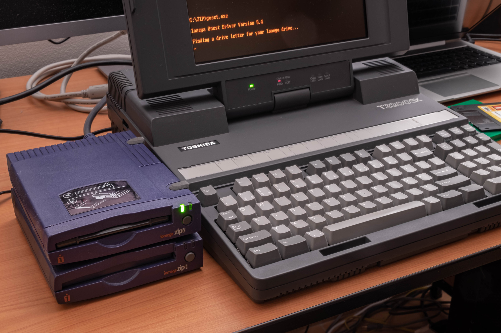
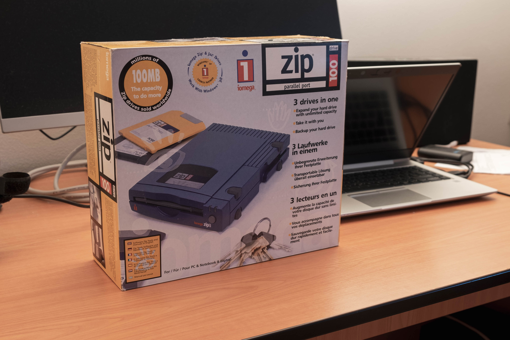
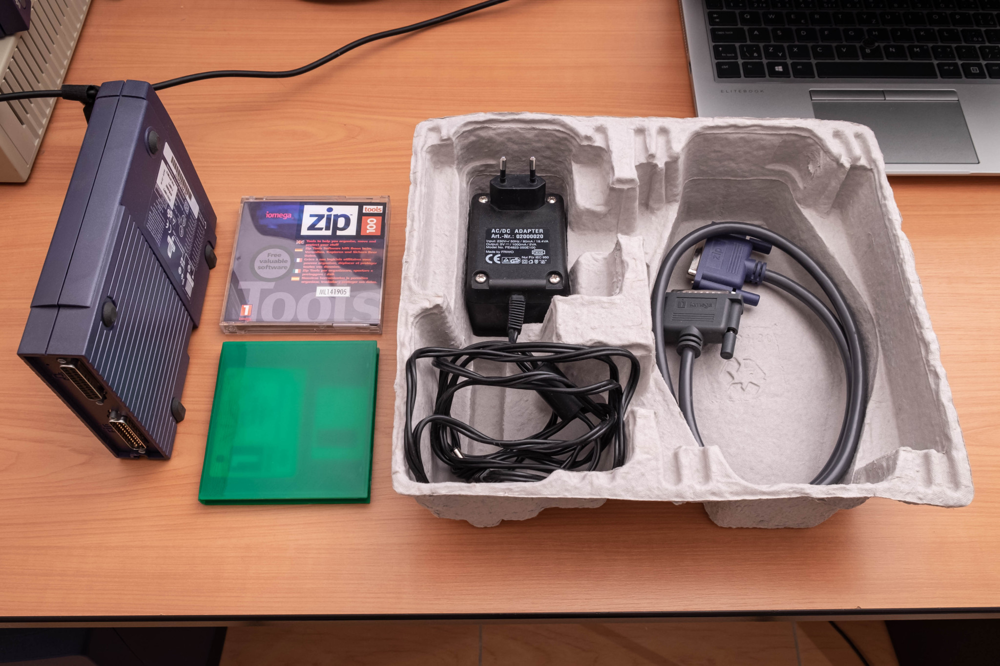

Iomega ZIP 100 drives
Thanks to friends of mine, I was able to get two working parallel-port ZIP drives from Iomega. My father used to use these during the 1990s as ZIP disks were popular in offices in Czech Republic. He later switched to an internal ZIP drive connected to IDE when his parallel-port external one died and used it for another 10 years.
I have a few systems where it is not possible to add a network controller so I though that this would be a good device for faster data transfers (compared to a null-modem cable or diskettes) or accessing data larger than the internal hard drives.
It works just fine. The only drawback is that you usually need a 486 system to leverage full speed of the external drive. My 386 laptops do not support the ECP/EPP protocols on the parallel port, so the access speed is significantly limited (150KB/s?). Anyway, it is still convenient enough for running DOS programs straight from the external drive. I am surprised how nice driver support Iomega provided for DOS and Windows 9x. There is even a “guest” driver in a form of a single exe file – just run it and you can immediately access the drive using a newly assigned drive letter.